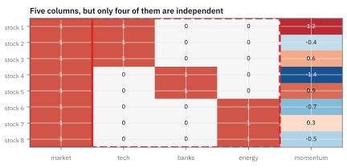
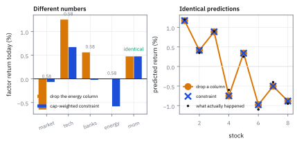
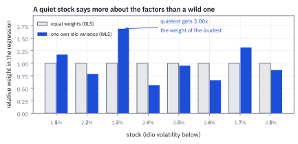
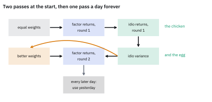

27.1 Cross-Sectional Regression and Rank-Deficient Loadings
หา factor return จากข้อมูลจริง และปัญหาที่โผล่มาในวันแรก
คุณมี market factor ที่ทุกหุ้นมี loading เท่ากับ 1 กับ industry สามตัวที่รวมกันได้ 1 ในทุกแถวเช่นกัน แล้วสั่งให้คอมพิวเตอร์หา factor return ผลคืออะไร?
เฉลย: มันแก้ไม่ออก เพราะ loadings matrix มีคอลัมน์ห้าคอลัมน์แต่มี rank แค่สี่ market เขียนเป็นผลรวมของ industry ทั้งสามได้พอดี จึงมีคำตอบที่ให้ค่าพอดีเท่ากันอยู่เป็นจำนวนอนันต์ ทางแก้มีสามทางและทางที่ดีที่สุดให้ market −0.0666% กับ tech +0.6708% ขณะที่ทางที่ง่ายที่สุดให้ −0.6466% กับ +1.2508% ทั้งสองทายราคาหุ้นได้เท่ากันเป๊ะ
ศัพท์ที่ใช้ในหัวข้อนี้
- cross-sectional regression
- การหาค่าที่อธิบายผลตอบแทนของหุ้นทุกตัวในวันเดียวกัน ทำซ้ำทุกวัน ใช้เป็นวิธีหา factor return ของ fundamental factor model
- fundamental factor model
- แบบจำลองที่ loading มาจากคุณสมบัติของบริษัทซึ่งรู้ล่วงหน้า ส่วน factor return ประมาณจากข้อมูล ใช้เป็นแบบที่คนทำงานจริงใช้มากที่สุด
- ordinary least squares (OLS)
- การหาค่าที่ทำให้ผลรวมของความคลาดเคลื่อนกำลังสองน้อยที่สุด โดยให้ทุกจุดข้อมูลน้ำหนักเท่ากัน ใช้เป็นตัวเทียบในขั้นที่ 6
- weighted least squares (WLS)
- การหาค่าที่ทำให้ผลรวมของความคลาดเคลื่อนกำลังสองที่ถ่วงน้ำหนักแล้วน้อยที่สุด ใช้เมื่อหุ้นแต่ละตัวมีความเหวี่ยงไม่เท่ากัน
- heteroskedastic
- สภาพที่ความเหวี่ยงไม่เท่ากันระหว่างข้อมูลแต่ละจุด ใช้อธิบายว่าทำไมหุ้นเล็กกับหุ้นใหญ่ไม่ควรมีน้ำหนักเท่ากัน
- rank
- จำนวนคอลัมน์ที่เป็นอิสระต่อกันจริง ๆ ใช้บอกว่าปัญหามีคำตอบเดียวหรือหลายคำตอบ
- rank-deficient
- สภาพที่ rank น้อยกว่าจำนวนคอลัมน์ ใช้เรียกปัญหาที่เกิดขึ้นเสมอเมื่อมีทั้ง market และ industry
- null direction
- ทิศทางที่คูณกับ loadings matrix แล้วได้ศูนย์ทั้งหมด ใช้บอกว่าจะบวกอะไรเข้าไปในคำตอบได้โดยไม่เปลี่ยนคำทำนาย
- identification
- การเลือกเงื่อนไขเพิ่มให้คำตอบเหลือเพียงหนึ่ง ใช้เป็นชื่อของสิ่งที่สามทางแก้ในหัวข้อนี้ทำ
- side constraint
- เงื่อนไขที่เติมเข้าไปในปัญหาเพื่อตรึงคำตอบ ใช้เป็นทางแก้ที่คนทำงานจริงเลือก
- Moore-Penrose pseudo-inverse
- ตัวผกผันทั่วไปที่ใช้ได้แม้ matrix จะผกผันไม่ได้ ใช้เลือกคำตอบที่มีความยาวน้อยที่สุด
- ridge penalty
- การเติมโทษตามขนาดของคำตอบเข้าไปในปัญหา ใช้ตรึงคำตอบแต่แลกมาด้วยความเอน
- estimation universe
- ชุดหุ้นที่ใช้ประมาณแบบจำลอง ใช้เลือกให้สภาพคล่องพอและราคาเชื่อถือได้
- factor-mimicking portfolio (FMP)
- พอร์ตที่ผลตอบแทนเท่ากับ factor return ที่ประมาณได้พอดี ใช้เป็นเหตุผลว่าทำไมเลือก WLS
- market capitalization
- มูลค่าตลาดของบริษัท ใช้เป็นน้ำหนักในเงื่อนไขที่คนทำงานจริงตั้ง
สัญลักษณ์ที่ใช้ในหัวข้อนี้
| สัญลักษณ์ | ความหมาย | หน่วย |
|---|---|---|
| $\mathbf r_t$ | ผลตอบแทนส่วนเกินของหุ้นทุกตัวในวัน t | decimal |
| $\mathbf B_t$ | loadings matrix ที่รู้ตั้งแต่ก่อนวันเริ่ม | unitless |
| $\mathbf f_t$ | factor return ที่ต้องหา | decimal |
| $\boldsymbol\epsilon_t$ | ส่วนที่เหลือ คือ idiosyncratic return | decimal |
| $\mathbf W$ | matrix น้ำหนักแบบ diagonal | decimal⁻² |
| $\boldsymbol\Omega_\epsilon$ | covariance matrix ของ idiosyncratic return | decimal² |
| $\mathbf v$ | null direction ของ loadings matrix | unitless |
| $\mathbf c$ | vector ของเงื่อนไขที่เติมเข้าไป | unitless |
| $\delta$ | ขนาดของโทษแบบ ridge | decimal |
| $n,\ m$ | จำนวนหุ้น และจำนวน factor | จำนวน |
ที่มาที่ไป: บทที่แล้วได้ factor return มาฟรี
ทั้งบทที่ 26 ใช้ $\mathbf f_t$ ราวกับว่ามันมีอยู่ในข้อมูล แต่มันไม่มี สิ่งที่มีจริงคือผลตอบแทนของหุ้นทุกตัว และคุณสมบัติของบริษัทซึ่งรู้ตั้งแต่เมื่อวาน factor return ต้องหาเอาจากสองอย่างนั้น
วิธีหาคือการถามว่า ค่าอะไรของ factor ที่ทำให้สมการอธิบายผลตอบแทนของหุ้นทุกตัวในวันนี้ได้ดีที่สุด นั่นคือ regression ธรรมดา แต่เป็น regression ที่วิ่งข้ามหุ้นในวันเดียว ไม่ใช่ข้ามเวลา จึงเรียกว่า cross-sectional และต้องทำใหม่ทุกวัน
ฟังดูตรงไปตรงมา แต่มีสองเรื่องที่โผล่มาทันทีในวันแรกที่ลงมือทำ เรื่องแรกคือหุ้นแต่ละตัวเหวี่ยงไม่เท่ากัน จึงไม่ควรมีน้ำหนักเท่ากัน เรื่องที่สองคือ loadings matrix ที่คนออกแบบมาให้อ่านง่าย กลับมีคอลัมน์ที่ซ้ำกันโดยโครงสร้าง จนสมการไม่มีคำตอบเดียว
โจทย์: หุ้น 8 ตัว ห้าคอลัมน์ แต่มี rank สี่
โจทย์ให้อะไรมาบ้าง หุ้น 8 ตัวในวันหนึ่ง แบบจำลองมีห้าคอลัมน์ market ซึ่งเป็นหนึ่งทุกตัว industry สามตัวคือ tech สำหรับหุ้น 1 ถึง 3 banks สำหรับหุ้น 4 กับ 5 และ energy สำหรับหุ้น 6 ถึง 8 แล้วก็ momentum อีกหนึ่งคอลัมน์
ผลตอบแทนของวันนี้เป็นเปอร์เซ็นต์คือ +1.20 +0.35 +0.90 −0.60 +0.25 −1.10 −0.40 −0.95 momentum คือ 1.2 −0.4 0.6 −1.4 0.9 −0.7 0.3 −0.5 idiosyncratic volatility คือ 1.8 2.2 1.5 2.6 2.0 2.4 1.7 2.1 และมูลค่าตลาดเป็นล้านคือ 300 180 220 400 150 260 340 190
ต้องหาห้าอย่าง ทิศที่ทำให้ matrix ไม่มีคำตอบเดียว factor return จากทางแก้ที่ง่ายที่สุด factor return จากทางแก้ที่คนทำงานใช้ ความต่างระหว่างสองชุด และความต่างระหว่างการถ่วงน้ำหนักกับไม่ถ่วง
ขั้นที่ 1 — สมการที่ต้องแก้ทุกวัน
นี่คือนิยามของปัญหา หาค่า factor ที่ทำให้ผลรวมของความคลาดเคลื่อนกำลังสองที่ถ่วงน้ำหนักแล้วน้อยที่สุด น้ำหนักที่ถูกคือหนึ่งส่วน idiosyncratic variance ของหุ้นตัวนั้น เพราะหุ้นที่เหวี่ยงแรงบอกอะไรได้น้อยกว่า
เหตุผลที่เลือกน้ำหนักแบบนี้ ไม่ใช่แค่ความสวยงามทางสถิติ ค่าที่ได้จากสูตรบรรทัดล่างคือผลตอบแทนของพอร์ตจริงพอร์ตหนึ่งที่ซื้อขายได้ ซึ่งเรียกว่า factor-mimicking portfolio และเป็นเนื้อหาของหัวข้อ 30.2 ถ้าใช้น้ำหนักอื่น ตัวเลขที่ได้จะไม่ใช่ผลตอบแทนของพอร์ตที่ซื้อได้จริง
เหตุผลที่สองคือความเอน ถ้าประมาณ factor return เอนไปนิดเดียวทุกวัน ความเอนนั้นสะสมตลอดปีและบิดรายงานผลงานในหัวข้อ 26.6 ทั้งใบ วิธีกำลังสองน้อยที่สุดแบบถ่วงน้ำหนักให้ค่าที่ไม่เอนและมีความคลาดเคลื่อนต่ำที่สุดในบรรดาวิธีเชิงเส้นทั้งหมด
ขั้นที่ 2 — ปัญหาไก่กับไข่ และทางออก
สังเกตว่าสูตรในขั้นที่ 1 ต้องใช้ $\boldsymbol\Omega_\epsilon$ เป็นข้อมูลเข้า แต่ $\boldsymbol\Omega_\epsilon$ คือ ผลลัพธ์ ของกระบวนการทั้งหมด ต้องมี idiosyncratic return ก่อนถึงจะหา variance ของมันได้ และต้องมี factor return ก่อนถึงจะมี idiosyncratic return
ทางออกคือเริ่มด้วยน้ำหนักเท่ากันหมด ซึ่งก็คือไม่ถ่วงน้ำหนักเลย แล้วใช้ผลที่ได้มาคำนวณน้ำหนักที่ดีกว่า แล้ววนอีกรอบ
บนโต๊ะจริงไม่ต้องวนทุกวัน ทำสองรอบเฉพาะปีแรกของประวัติข้อมูล หลังจากนั้นใช้ $\boldsymbol\Omega_\epsilon$ ของเมื่อวานเป็นน้ำหนักของวันนี้ เพราะมันเปลี่ยนช้ามาก ประหยัดเวลาคำนวณไปเกือบครึ่ง
อีกทางที่ใช้กันคือยืมตัวเลขจากผู้ให้บริการเชิงพาณิชย์มาเป็นน้ำหนักตั้งต้น ซึ่งไม่ได้แปลว่าลอกแบบจำลองเขา แค่ใช้เป็นจุดเริ่มที่ดีกว่าการให้ทุกตัวเท่ากัน
Figure 27.1a — market เป็นผลรวมของ industry พอดี matrix จึงมี rank ไม่ครบ

ตารางของ loading ทั้งห้าคอลัมน์ คอลัมน์ซ้ายสุดคือ market ที่เป็นหนึ่งทุกแถว สามคอลัมน์กลางคือ industry ที่แต่ละแถวมีหนึ่งเดียวเป็น 1 บวกสามคอลัมน์กลางเข้าด้วยกันแล้วได้คอลัมน์ซ้ายสุดพอดี นั่นคือทั้งปัญหา
ขั้นที่ 3 — ทิศที่มองไม่เห็น
หาทิศที่คูณกับ loadings matrix แล้วได้ศูนย์ทุกแถว ถ้ามีทิศแบบนั้น บวกมันเข้าไปในคำตอบเท่าไรก็ได้ คำทำนายไม่เปลี่ยน แปลว่ามีคำตอบดีที่สุดเป็นจำนวนอนันต์
อ่าน $\mathbf v$ ได้ตรง ๆ ว่า “เพิ่ม market หนึ่งหน่วย แล้วลด industry ทุกตัวลงหนึ่งหน่วย” ผลลัพธ์ต่อหุ้นทุกตัวคือศูนย์ เพราะทุกหุ้นได้ market มาหนึ่งหน่วยและเสีย industry ของตัวเองไปหนึ่งหน่วย
ผลที่ตามมาในทางปฏิบัติคือ $\mathbf B^{\mathsf T}\boldsymbol\Omega_\epsilon^{-1}\mathbf B$ ผกผันไม่ได้ สูตรในขั้นที่ 1 ใช้ไม่ได้ตรง ๆ และถ้าเขียนโค้ดแบบไม่ระวัง บางภาษาจะคืนตัวเลขที่ดูเหมือนคำตอบออกมาโดยไม่เตือนอะไรเลย ซึ่งอันตรายกว่าการพัง
สังเกตว่าตำแหน่งสุดท้ายของ $\mathbf v$ เป็นศูนย์ แปลว่า momentum ไม่เกี่ยวข้องกับปัญหานี้เลย ค่าของมันจะออกมาเท่ากันไม่ว่าจะแก้ด้วยทางไหน ซึ่งขั้นที่ 5 จะยืนยัน
แล้วเอาไปใช้ทำอะไรได้จริงบ้าง
ทางแก้ที่ง่ายที่สุดคือลบคอลัมน์ทิ้งหนึ่งคอลัมน์ ซึ่งได้ผลและใช้เวลาสิบวินาที แต่มันทำให้ตัวเลขอ่านยากขึ้นมาก เพราะ industry ที่เหลือกลายเป็น “เทียบกับ energy” และ market กลายเป็น “ผลตอบแทนของหุ้น energy ที่ momentum เป็นศูนย์” ซึ่งไม่ใช่สิ่งที่ใครอยากเห็นในรายงาน
บนโต๊ะจริงจึงใช้อีกทาง คือเติมเงื่อนไขที่มีความหมายทางธุรกิจเข้าไปหนึ่งข้อ เงื่อนไขที่นิยมที่สุดคือให้ผลตอบแทนของ industry ถ่วงด้วยมูลค่าตลาดรวมกันได้ศูนย์ ซึ่งแปลว่า “ตลาดทั้งตลาดไม่มีผลตอบแทนจาก industry” และทำให้ market factor กลายเป็นผลตอบแทนของตลาดจริง ๆ
ขั้นที่ 4 — สามทางแก้ และทางที่เลือก
ทั้งสามทางเติมข้อมูลหนึ่งชิ้นเข้าไปเพื่อตรึงคำตอบ ต่างกันที่ข้อมูลชิ้นนั้นคืออะไร
ทาง ข ฟังดูเป็นกลางที่สุดเพราะไม่ต้องเลือกอะไร แต่มันเลือกอยู่ดี มันเลือกคำตอบที่มีความยาวสั้นที่สุด ซึ่งไม่มีความหมายทางธุรกิจใด ๆ และค่าที่ได้ก็เอนเล็กน้อยด้วย เพราะโทษตามขนาดดึงทุกอย่างเข้าหาศูนย์
ทาง ค คือสิ่งที่ผู้ให้บริการเชิงพาณิชย์ใช้ ตัวเลขใน $\mathbf c$ คือสัดส่วนมูลค่าตลาดของแต่ละ industry ซึ่งในโจทย์นี้คือ tech 34.31% banks 26.96% energy 38.73%
ความหมายของเงื่อนไขอ่านได้เป็นภาษาคน ถ้าถือหุ้นทั้งตลาดตามสัดส่วนมูลค่า จะไม่ได้หรือเสียอะไรเลยจาก industry ทุกอย่างที่ได้มาจาก market กับ style ซึ่งเป็นวิธีแบ่งที่ทำให้ตัวเลขในรายงานตีความได้
ขั้นที่ 5 — ตัวเลขจริงจากสองทาง
แก้ทั้งสองทางด้วยข้อมูลของโจทย์ แล้ววางเทียบกัน ทั้งคู่ใช้น้ำหนักเดียวกันคือหนึ่งส่วน idiosyncratic variance
บรรทัดสุดท้ายคือสิ่งที่ยืนยันว่าทุกอย่างสอดคล้องกัน สองคำตอบต่างกันด้วยตัวคูณของ null direction พอดี ไม่ใช่ต่างกันมั่ว ๆ นั่นคือสิ่งที่ทฤษฎีทำนายไว้
และค่าของ momentum เท่ากันเป๊ะที่ 0.4741% ในทั้งสองทาง เพราะ null direction มีศูนย์ในตำแหน่งนั้น การเลือกเงื่อนไขไม่มีผลกับ style เลย มีผลแค่กับการแบ่งระหว่าง market กับ industry
ตรวจเองใน 10 วินาที ค่าที่ทำนายได้ต้องเท่ากันทั้งสองทาง หุ้นตัวแรกในทางแรกคือ −0.6466 + 1.2508 + 1.2(0.4741) = 1.1731% ในทางที่สองคือ −0.0666 + 0.6708 + 1.2(0.4741) = 1.1731% ตรงกัน และความคลาดเคลื่อนสูงสุดระหว่างสองชุดคือ 2.2 × 10⁻¹⁸
Figure 27.1b — สองเงื่อนไข ตัวเลขคนละชุด คำทำนายชุดเดียวกัน

แผงซ้ายคือ factor return จากสองเงื่อนไข ซึ่ง market และ industry ต่างกัน 0.58 จุดทุกตัว ส่วน momentum เท่ากันเป๊ะ แผงขวาคือผลตอบแทนที่แบบจำลองทำนายให้หุ้นทั้งแปดตัว ซึ่งทั้งสองเงื่อนไขให้ค่าทับกันสนิท
ขั้นที่ 6 — ถ่วงน้ำหนักกับไม่ถ่วง ต่างกันแค่ไหน
รันซ้ำด้วยน้ำหนักเท่ากันหมด ซึ่งคือ OLS ธรรมดา แล้วเทียบกับ WLS ที่ถ่วงด้วยหนึ่งส่วน idiosyncratic variance
ส่วนต่างในวันเดียวดูเล็ก 0.0595 จุด แต่มันไม่สุ่ม ความเอนไปทางเดียวกันทุกวัน และสะสมได้ 15 จุดต่อปีถ้าทิศเดิม ซึ่งใหญ่กว่า alpha ของกลยุทธ์จำนวนมาก
บรรทัดล่างสุดอธิบายว่าทำไม หุ้นที่เงียบที่สุดในโจทย์มีน้ำหนักเป็นสามเท่าของหุ้นที่เหวี่ยงที่สุด เพราะข้อมูลของมันบอกเรื่อง factor ได้ชัดกว่า ในตลาดจริงที่ idiosyncratic volatility ต่างกันได้ห้าเท่า อัตราส่วนน้ำหนักจะเป็น 25 เท่า
Figure 27.1c — หุ้นเงียบพูดดังกว่าในสมการ

แกนนอนคือ idiosyncratic volatility ของหุ้นแต่ละตัว แกนตั้งคือน้ำหนักที่มันได้ในสมการ เทียบระหว่าง OLS ที่ทุกตัวเท่ากัน กับ WLS ที่น้ำหนักลดลงเป็นหนึ่งส่วนกำลังสองของความเหวี่ยง หุ้นตัวที่เงียบที่สุดได้น้ำหนักสามเท่าของตัวที่เหวี่ยงที่สุด
Figure 27.1d — วนสองรอบเพื่อแก้ปัญหาไก่กับไข่

แผนภาพลำดับงาน รอบแรกใช้น้ำหนักเท่ากันเพื่อให้ได้ idiosyncratic return ชุดแรก จากนั้นคำนวณ variance ของมันมาเป็นน้ำหนักของรอบสอง ตั้งแต่วันที่สองเป็นต้นไปใช้ค่าของเมื่อวานได้เลย เพราะมันเปลี่ยนช้ากว่าที่คิดมาก
กับดัก: ปล่อยให้โค้ดเลือกเงื่อนไขให้เอง และเปลี่ยนเงื่อนไขกลางทาง
กับดักแรกคือเรียกคำสั่งหาคำตอบของ regression โดยไม่รู้ว่า matrix มี rank ไม่ครบ ไลบรารีส่วนใหญ่จะไม่พังแต่จะเงียบ ๆ เลือกคำตอบที่มีความยาวสั้นที่สุดให้ ซึ่งเป็นทาง ข ในขั้นที่ 4 คำตอบนั้นใช้ได้ในแง่การทำนาย แต่ตัวเลขรายตัวไม่มีความหมายทางธุรกิจ และไม่มีใครในทีมรู้ว่ามันถูกเลือกไปแล้ว
กับดักที่สองคือเปลี่ยนเงื่อนไขกลางประวัติข้อมูล เช่นเคยลบ energy แล้วเปลี่ยนมาใช้เงื่อนไขถ่วงมูลค่าตลาด ตัวเลข factor return ทุกตัวจะกระโดด 0.58 จุดพร้อมกันในวันที่เปลี่ยน ทั้งที่ไม่มีอะไรจริงเกิดขึ้น และการทดสอบย้อนหลังใด ๆ ที่คร่อมวันนั้นจะเห็นการกระโดดนั้นเป็นเหตุการณ์จริง
กับดักที่สามละเอียดกว่า น้ำหนักในขั้นที่ 1 ต้องมาจาก idiosyncratic variance ที่ประมาณจากข้อมูล ก่อนหน้า วันที่กำลังคำนวณ ถ้าเผลอใช้ข้อมูลของวันเดียวกัน หุ้นที่บังเอิญเหวี่ยงแรงวันนั้นจะได้น้ำหนักต่ำ ซึ่งแปลว่าแบบจำลองรู้ล่วงหน้าว่าวันนี้ใครจะเหวี่ยง ผลคือ factor return ที่ดูดีเกินจริงและ idiosyncratic return ที่เล็กเกินจริง
ข้อจำกัด: สามทางแก้ เทียบกัน
| ทางแก้ | ข้อดี | ข้อเสีย | ใช้เมื่อไร |
|---|---|---|---|
| ลบคอลัมน์ทิ้ง | ง่ายที่สุด ใช้สูตรเดิมได้เลย ไม่เอน | ตัวเลขกลายเป็น “เทียบกับตัวที่ลบ” และคนที่ดู industry นั้นจะไม่มีอะไรดู | ต้นแบบที่ทำเร็ว ๆ หรือเมื่อ industry ที่ลบไม่สำคัญจริง ๆ |
| โทษตามขนาด | ไม่ต้องเลือกอะไร โค้ดสั้น | เลือกคำตอบที่สั้นที่สุดซึ่งไม่มีความหมาย และเอนเล็กน้อย | เมื่อสนใจแค่คำทำนาย ไม่สนใจตัวเลขรายตัว |
| เงื่อนไขข้าง | ตัวเลขทุกตัวตีความได้ ครบทุก industry ไม่เอน | ต้องเขียนโค้ดเพิ่มเล็กน้อย และต้องเลือกน้ำหนักในเงื่อนไข | ระบบจริงเกือบทั้งหมดใช้ทางนี้ |
| ทั้งสามทาง | คำทำนายและ idiosyncratic return เหมือนกันเป๊ะ | factor return รายตัวต่างกัน และรายงานผลงานต่างตาม | เลือกครั้งเดียวแล้วอย่าเปลี่ยน |
แถวสุดท้ายคือสิ่งที่ทำให้เรื่องนี้ไม่น่ากลัวเท่าที่คิด ทุกอย่างที่ใช้ตัดสินใจเรื่องความเสี่ยงและ idiosyncratic PnL เหมือนกันหมด ที่ต่างคือการเล่าเรื่องว่า factor ไหนได้เครดิต
ตรวจทุกตัวเลขของหัวข้อนี้
import numpy as np
ind = np.array([0, 0, 0, 1, 1, 2, 2, 2]) # tech, banks, energy
B = np.zeros((8, 5))
B[:, 0] = 1
B[np.arange(8), 1 + ind] = 1
B[:, 4] = [1.2, -0.4, 0.6, -1.4, 0.9, -0.7, 0.3, -0.5]
r = np.array([1.20, 0.35, 0.90, -0.60, 0.25, -1.10, -0.40, -0.95]) / 100
sig = np.array([1.8, 2.2, 1.5, 2.6, 2.0, 2.4, 1.7, 2.1])
W = np.diag(1 / sig ** 2)
cap = np.array([300.0, 180, 220, 400, 150, 260, 340, 190])
# step 3: the direction the data cannot see
assert np.linalg.matrix_rank(B) == 4 and B.shape[1] == 5
v = np.array([1.0, -1, -1, -1, 0])
assert np.allclose(B @ v, 0)
assert np.linalg.matrix_rank(B.T @ W @ B) == 4 # so it cannot be inverted
# step 5a: drop the energy column
Bd = np.delete(B, 3, axis=1)
fd = np.linalg.solve(Bd.T @ W @ Bd, Bd.T @ W @ r)
assert np.allclose(fd * 100, [-0.6466, 1.2508, 0.5593, 0.4741], atol=5e-5)
# step 5b: a side constraint instead
cw = np.array([cap[ind == g].sum() for g in range(3)])
cw = cw / cw.sum()
assert np.allclose(cw, [0.343137, 0.269608, 0.387255], atol=1e-6)
c = np.zeros(5); c[1:4] = cw
A = np.zeros((6, 6)); A[:5, :5] = B.T @ W @ B; A[:5, 5] = c; A[5, :5] = c
rhs = np.zeros(6); rhs[:5] = B.T @ W @ r
fc = np.linalg.solve(A, rhs)[:5]
assert np.allclose(fc * 100, [-0.0666, 0.6708, -0.0207, -0.5800, 0.4741], atol=5e-5)
assert abs(c @ fc) < 1e-15 # the constraint really binds
# the two answers differ by exactly a multiple of the null direction
full_d = np.insert(fd, 3, 0.0)
diff = full_d - fc
assert np.allclose(diff, -0.005800 * v, atol=5e-7)
assert abs(diff[4]) < 1e-15 # momentum is untouched
assert abs(fd[3] - fc[4]) < 1e-15 # same style number both ways
# and they predict exactly the same returns
assert np.allclose(Bd @ fd, B @ fc, atol=1e-15)
assert np.allclose(r - Bd @ fd, r - B @ fc, atol=1e-15)
assert abs((Bd @ fd)[0] * 100 - 1.1731) < 5e-5 # the 10-second check
# step 6: weighted against unweighted
fo = np.linalg.lstsq(Bd, r, rcond=None)[0]
assert np.allclose(fo * 100, [-0.6794, 1.2826, 0.6188, 0.4575], atol=5e-5)
assert abs(np.abs(fo - fd).max() * 100 - 0.0595) < 5e-5
assert abs((2.6 / 1.5) ** 2 - 3.0044) < 1e-3 # weight ratio, quietest to loudest
# step 2: the two-stage bootstrap converges fast
f1 = np.linalg.lstsq(Bd, r, rcond=None)[0] # round 1: equal weights
e1 = r - Bd @ f1
W2 = np.diag(1 / np.maximum(e1 ** 2, 1e-8))
f2 = np.linalg.solve(Bd.T @ W2 @ Bd, Bd.T @ W2 @ r)
assert np.abs(f2 - f1).max() < 0.01 # round 2 moves it, but not wildlyบรรทัดที่ยืนยันว่าส่วนต่างเท่ากับ −0.58% คูณ null direction พอดี คือหลักฐานว่าความกำกวมทั้งหมดอยู่ในทิศเดียวนั้นจริง ไม่ใช่กระจายมั่ว และบรรทัดที่เทียบ idiosyncratic return ยืนยันว่าทุกอย่างที่ใช้วัดความเสี่ยงไม่ขึ้นกับการเลือกเงื่อนไข
ก่อนไปต่อ
ตอนนี้เรามี factor return วันละหนึ่งชุดแล้ว สะสมไปหนึ่งปีได้ 251 ชุด คำถามถัดไปคือ จะเอาข้อมูลชุดนั้นมาสร้าง covariance matrix อย่างไร ซึ่งฟังดูเหมือนแค่คำนวณค่าเฉลี่ยของผลคูณ แต่มีสี่เรื่องที่ทำให้มันไม่ง่ายอย่างนั้น
สรุปที่ใช้ได้จริง
- factor return หาจาก cross-sectional regression ที่รันใหม่ทุกวัน ถ่วงน้ำหนักด้วยหนึ่งส่วน idiosyncratic variance เพราะนั่นทำให้ค่าที่ได้เป็นผลตอบแทนของพอร์ตที่ซื้อขายได้จริง
- $\boldsymbol\Omega_\epsilon$ เป็นทั้งข้อมูลเข้าและผลลัพธ์ ทางออกคือวนสองรอบในปีแรก แล้วใช้ค่าของเมื่อวานเป็นน้ำหนักของวันนี้
- market บวกกับ industry ที่รวมกันได้หนึ่ง ทำให้ matrix มี rank ไม่ครบเสมอ ทิศที่หายไปคือ “เพิ่ม market หนึ่ง ลด industry ทุกตัวหนึ่ง”
- ทางแก้ที่ใช้กันคือเติมเงื่อนไขว่าผลตอบแทน industry ถ่วงมูลค่าตลาดรวมกันได้ศูนย์ ซึ่งทำให้ market เป็นผลตอบแทนของตลาดจริง ๆ ในโจทย์นี้สองทางแก้ต่างกัน 0.58 จุดทุก factor แต่ทำนายเหมือนกันเป๊ะ
- ค่าของ style ไม่ขึ้นกับการเลือกเงื่อนไขเลย และ idiosyncratic return ก็ไม่ขึ้นด้วย สิ่งที่ขึ้นคือการแบ่งเครดิตระหว่าง market กับ industry เท่านั้น